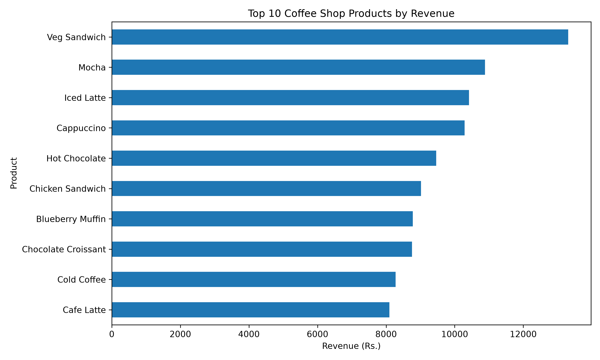
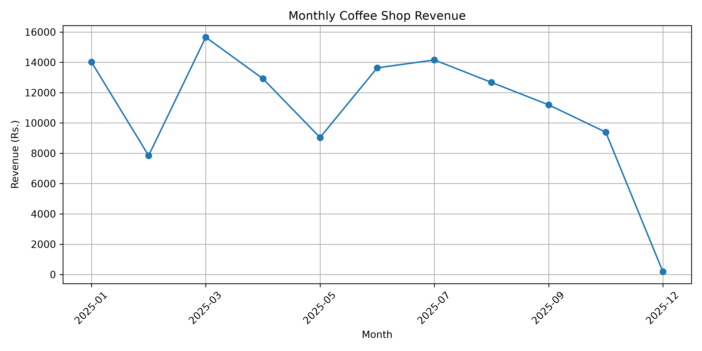
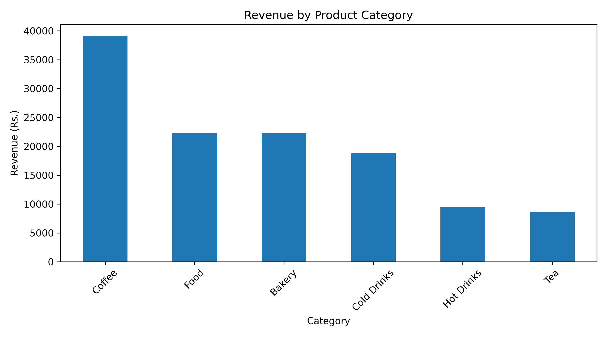

Generated on: 24 October 2026
This report summarizes coffee shop sales, product performance, category revenue, and gross profitability based on the analysed dataset. The dataset is simulated for educational purposes.
| Revenue (Rs.) | |
|---|---|
| product_name | |
| Veg Sandwich | 13,310.00 |
| Mocha | 10,885.00 |
| Iced Latte | 10,420.00 |
| Cappuccino | 10,290.00 |
| Hot Chocolate | 9,460.00 |
| Chicken Sandwich | 9,015.00 |
| Blueberry Muffin | 8,780.00 |
| Chocolate Croissant | 8,755.00 |
| Cold Coffee | 8,275.00 |
| Cafe Latte | 8,095.00 |
| Revenue (Rs.) | |
|---|---|
| category | |
| Coffee | 39,150.00 |
| Food | 22,325.00 |
| Bakery | 22,275.00 |
| Cold Drinks | 18,835.00 |
| Hot Drinks | 9,460.00 |
| Tea | 8,660.00 |
The highest-revenue category is Coffee.



The dataset is simulated, so results do not represent a real business. Revenue and profit calculations depend on the available prices, costs, and discounts. Revenue alone does not establish which products are most popular by quantity.